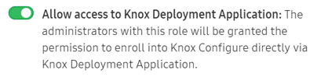
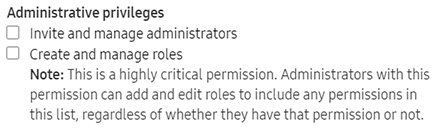

Knox Configure for Wearables 1.20 release notes
Last updated July 26th, 2023
“Per Device Staggered” license for Setup edition profiles
This release offers admins the option to enable the new Per Device staggered license feature.
Once the feature is selected, admins can create a Setup edition profile and assign devices before activating a Setup edition license. Once each device is activated, each license expiration date will depend on the device’s activation date.
This feature addresses customer concerns to only activate a Setup edition license once each device is actually activated. This enables customers to utilize licenses more efficiently, since a customer may not initially use Knox Configure after it is purchased, or deploy devices at the same time.
Note that feature availability will vary per country. Existing KC SKUs will be kept as is, and are not immediately impacted by this change. Official notice will be shared with KC console users via email and console notifications two weeks prior to this release.
“Per Seat” license for Dynamic edition profiles
New to Knox Configure is the ability to revoke a license on one device for reallocation to another device.
This new feature improves license provisioning efficiency with the Dynamic edition profile by utilizing the revoked licenses to increase the available license count.
Note that feature availability will vary per country. Existing KC SKUs will be kept as is, and are not immediately impacted by this change. Official notice will be shared with KC console users via email and console notifications two weeks prior to this release.
Assign multiple licenses to a profile
To date, creating a profile required an assigned license. With this release, profile creation and license assignment are no longer linked. Each device will now follow the behaviour of their individually assigned license type.
This new feature allows legacy licenses and new licenses to be used concurrently in the same profile, or if necessary, a profile can be created and saved without assigning a license.
Knox Deployment App (KDA) license enhancement
With this release, admins who are using KDA to enroll devices now have the option of explicitly assigning a license for KDA at profile creation.

Note that licenses previously utilized with legacy profiles created prior to this release will be automatically migrated to KDA licenses. Only one license can be assigned for KDA. If the license is consumed or expires, the license will need to be replaced.
KDA only access permission

This feature allows admins to specify the use of only KDA for Bluetooth enrolments, without accessing the Knox Configure console.
To do this, admins are required to log into KDA to choose a Knox Configure Cloud service, select a profile, pair the admin device to the target device, and assign the profile to the target device.
Additionally, admins can give permission to allow access to KDA to enroll into Knox Configure directly using KDA.
Admins now capable of being invited to multiple services
An enhancement to Knox Configure now includes the ability to specify Administrative privileges.To date, admins were unable to invite admins from a different Knox Cloud Service.

With this release, a Super Admin or Admin with a Manage role privilege can now invite another admin from a different service to a role in their service. For example, an admin for KC can invite another admin from KME. Note that existing admins without a Manage role permission are restricted to only inviting admins with a matching set of their own role permission. For example, a non-super admin won’t be able to invite a Super admin from another service if they don’t currently have Super admin permissions.
Back to release notesIs this page helpful?